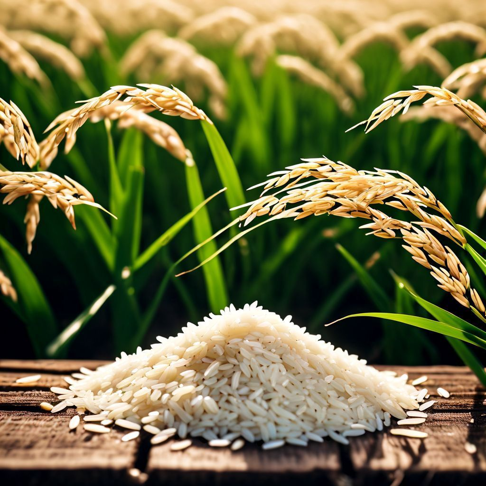

Le riz est l’une des principales céréales cultivées et consommées dans le monde. Il constitue un aliment de base essentiel et joue un rôle important dans la sécurité alimentaire. Il pousse dans des sols adaptés avec un bon apport en eau et nécessite un entretien régulier pour assurer une bonne production. La récolte a généralement lieu entre 3 et 6 mois après le semis, selon la variété. Riche en glucides, le riz fournit l’énergie nécessaire à l’organisme et est utilisé dans de nombreuses recettes traditionnelles et modernes.